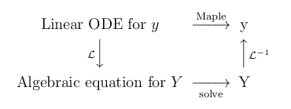
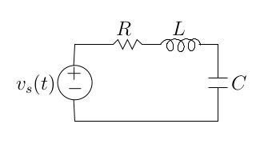
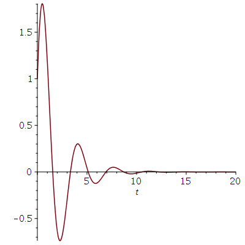

We provide a very short introduction to the Laplace transformations in Maple. In particular, we explain how to use them to solve linear ODE with constant coefficients.
The Laplace transform of a function \(f\) is the function \(F\) defined by
\[ F(s) = \mathcal{L}(f)(s) = \int_0^\infty f(t) e^{-s t} \text{d} t \]for the values of \(s\) where the integral converges. Maple can compute Laplace transforms for us. We need to load the library of integral transforms inttrans to our Maple session.
> with(inttrans):
The Laplace transform of the function \(f\) defined by \(\displaystyle f(t) = e^{-3 t}\sin(5 t)\) is computed as it follows.
> ft := exp(-3*t)*sin(5*t); Fs:=laplace(ft,t,s);\[ \begin{split} & ft := e^{-3t} \sin(5t) \\ & Fs := \frac{5}{(s+3)^2 + 25} \end{split} \]
The inverse Laplace transform of a function \(F\) is a
function \(f\) such that \(\mathcal{L}(f)(s) = F(s)\)
for all
\(s\) in the domain of \(F\). We write
\(\displaystyle \mathcal{L}^{-1}(F) = f\). There is an integral formula to
compute the inverse Laplace transform of a function but we can manage
without it in this introduction.
The inverse Laplace transform of the function \(H\) defined by \(\displaystyle H(s) = \frac{1}{s^2-4}\) is computed as it follows.
> Hs := 1/(s^2-4); ht:=invlaplace(Hs,s,t);\[ \begin{split} &Hs := \frac{1}{s^2-4} \\ &ht := \frac{\text{sinh}(2 t)}{2} \end{split} \]
The Heaviside Function is defined by
\[ H(t) = \begin{cases} 1 & \text{ if } t \geq 0 \\ 0 & \text{ if } t < 0 \end{cases} \]It is denoted Heaviside() in Maple. The Laplace transform of this function is given below.
> laplace(Heaviside(t),t,s);\[ \frac{1}{s} \]
We often have to shift the Heaviside Function such that the jump is at a value other than the origin.
> H4t := t->Heaviside(t-4); H4s := laplace(H4t(t),t,s);\[ \begin{split} & H4t := t \mapsto \mathrm{Heaviside}(t - 4) \\ & H4s := \frac{e^{-4s}}{s} \end{split} \]
The Heaviside function has some interesting properties. For instance, \(\displaystyle \mathcal{L}(t \mapsto H(t-a) f(t-a) )(s) = e^{-a s} F(s)\) where \(F = \mathcal{L}(f)\).
The Dirac Delta Function is defined
by
\(\delta(t) = 0\) for \(t \neq 0\) and
\(\displaystyle \int_{-a}^a f(t) \delta(t) \text{d}t = f(0)\) for all
functions \(f\) and all \(a > 0\). The reader may learn in a course
on measure theory that in fact the Dirac Delta Function is not a
function. We will not elaborate on this fascinating subject. The
Dirac Delta function is denoted Dirac()
in Maple. It follows from its definition that the
Laplace transform of the Dirac Delta function is the function given
below.
> laplace(Dirac(t),t,s);\[ 1 \]
Suppose that we want to solve the ODE
\[ y^{(n)}(t) + a_{n-1} y^{(n-1)}(t) + \ldots a_1 y''(t) + a_1 y(t) = f(t) \]with the initial conditions \(y(0)=y_0, y'(0)=y_1, \ldots, y^{(n-1)}(0) = y_{n-1}\). The method using Laplace transformations to solve linear ODE with constant coefficients is simple. We compute the Laplace Transform of both sides of the ODE to obtain an algebraic equation in function of \(Y = \mathcal{L}(y)\). We solve this algebraic equation in function of \(Y\). Finally, we compute the inverse Laplace transform of \(Y\) to get the solution \(y\) of the ODE with the initial conditions. The following commutative diagram summarizes the procedure to solve linear ODE with Laplace transformations.

The ODE is transformed into an algebraic equation (no more derivatives) because the Laplace Transformations eliminate the derivatives. In fact, \(\mathcal{L}(y')(s) = s Y(s)- y(0)\), \(\displaystyle \mathcal{L}(y'')(s) = s^2 Y(s) - s y(0) -y'(0)\) and in general
\[ \mathcal{L}(y^{(n)})(s) = s^n Y(s) - s^{(n-1)} y(0) -s^{(n-2)} y'(0)- \ldots - y^{(n-1)}(0) \]These formulae can be proved using integration by parts.
Example: Consider the ODE \(y''(t) + 4 y(t) = \cos(2t)\) defined by the following command in Maple
> eq1 := diff(y(t),t$2) + 4*y(t)=cos(2*t);\[ eq1 := \frac{\text{d}^2}{\text{d}t^2} y(t) + 4 y(t) = \cos(2t) \]
with the initial conditions \(y(0)=2\) and \(y'(0)=3\). If we follow the procedure above to solve ODE with Laplace transformations, then we perform the following operations.
> eq2 := laplace(eq1,t,s);
Ys:=solve(eq2,laplace(y(t),t,s));
yt := invlaplace(Ys,s,t);
yt := subs({y(0)=2,D(y)(0)=3},yt);
\[
\begin{split}
& eq2 := s^2\,\mathrm{laplace}(y(t),t,s) -D(y)(0) - s y(0)
+4\,\mathrm{laplace}(y(t),t,s) = \frac{s}{s^2 + 4} \\
& Ys := \frac{ y(0) s^3+ 4 s y(0) + D(y)(0) s^2 + 4 D(y)(0)+s}{ (s^2 + 4)^2} \\
& yt := y(0)\, \cos(2 t) + \frac{\sin(2t) (t + 2*D(y)(0))}{4}\\
& yt := 2 \cos(2 t) + \frac{\sin(2t) (t + 6)}{4}
\end{split}
\]
Note: The graphical version of Maple may display
\(\mathcal{L}\) instead of laplace
. However, we
should write laplace
in the commands.
All the work to solve the linear ODE with initial conditions of the previous example can be done with one Maple command.
> dsolve({eq1,y(0)=2,D(y)(0)=3},y(t),method=laplace);
\[
y(t) = 2 \cos(2 t) + \frac{\sin(2t)(t + 6)}{4}
\]
Laplace transformations are often used when studying electrical circuit. Consider the following RLC circuit.

The constant \(R\) is the resistance (in ohms) of a resistor, \(L\) is the inductance (in henrys) of an inductor, and \(C\) is the capacitance (in farads) of a capacitor. The value \(v_s(t)\) is the strength of the voltage source (in volts) at time \(t\). According to Kirchoff's voltage law \(v_s + Ri = v_C + v_L\) where \(v_C\) is the voltage at the capacitor, \(v_L\) is the voltage at the inductor, and \(i\) is the current (in amperes). The RLC circuit is governed by the following ODE.
> eq3 := L*C*diff(v(t),t$2) + R*C*diff(v(t),t) + v(t)=VS(t);\[ eq3 := L C \left( \frac{\text{d}^2}{\text{d}t^2} v(t)\right) + R C \left( \frac{\text{d}}{\text{d}t} v(t)\right) + v(t) = VS(t) \]
The value v(t) is the voltage in the circuit at time \(t\) and VS represents in Maple the function \(v_s\).
Suppose that R=2 ohms, C=0.15 farads, L=2 henrys and VS(t) = Dirac(t).
> eq4 := subs({R=2, C=0.15, L=2, VS(t)=Dirac(t)},eq3);
\[
eq4 := 0.30 \frac{\text{d}^2}{\text{d}t^2} v(t) + 0.30 \frac{\text{d}}{\text{d}t} v(t) + v(t) = Dirac(t)
\]
If the initial conditions are v(0)=1 and D(v)(0)=0, then we get the following solution.
> dsolve({eq4, v(0) = 1, (D(v))(0) = 0}, v(t), method = laplace);
\[
v(t) = \frac{e^{-\frac{t}{2}} \left( 111\cos\left(\frac{\sqrt{111} t}{6}\right) + 23 \sqrt{111} \sin\left(\frac{\sqrt{111} t}{6}\right)\right)}{111}
\]
The graph of the voltage v in function of the time is drawn below.
> plot(rhs(%), t = 0 .. 20);
